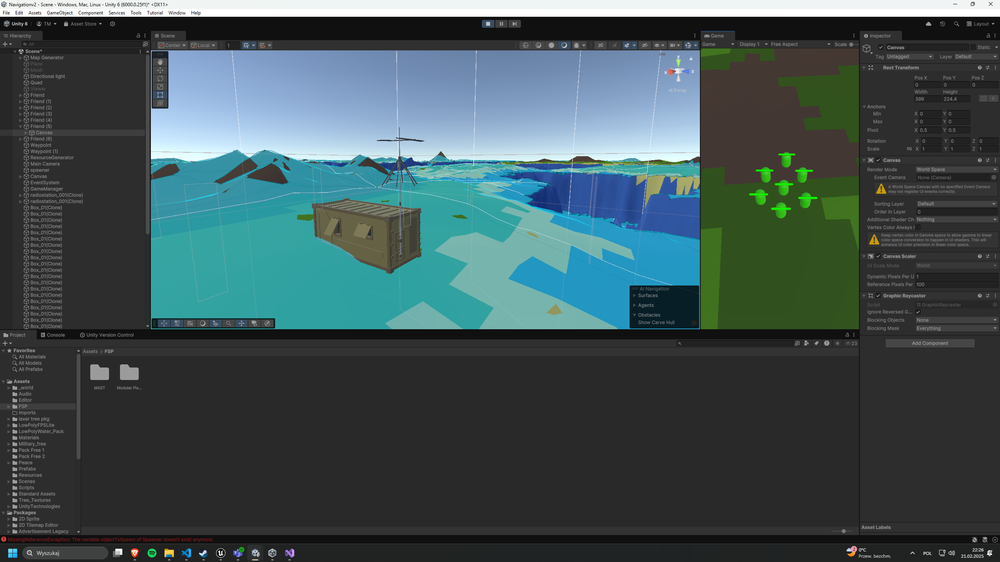
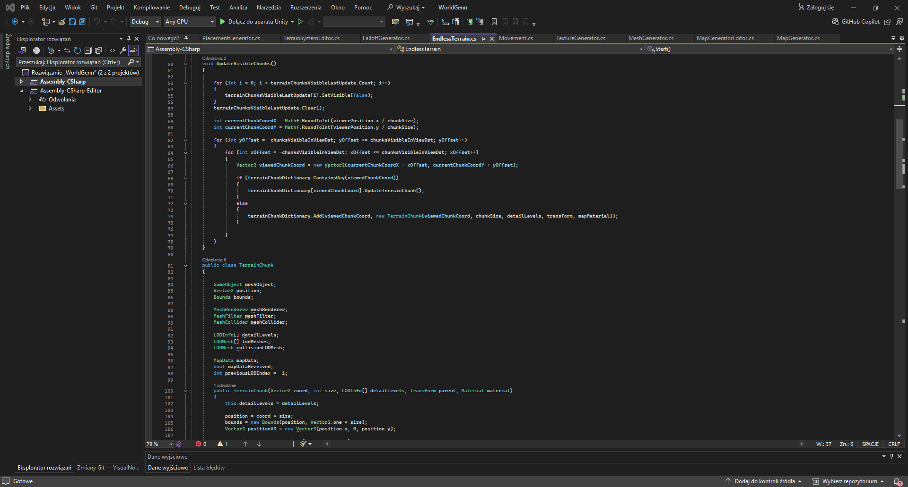
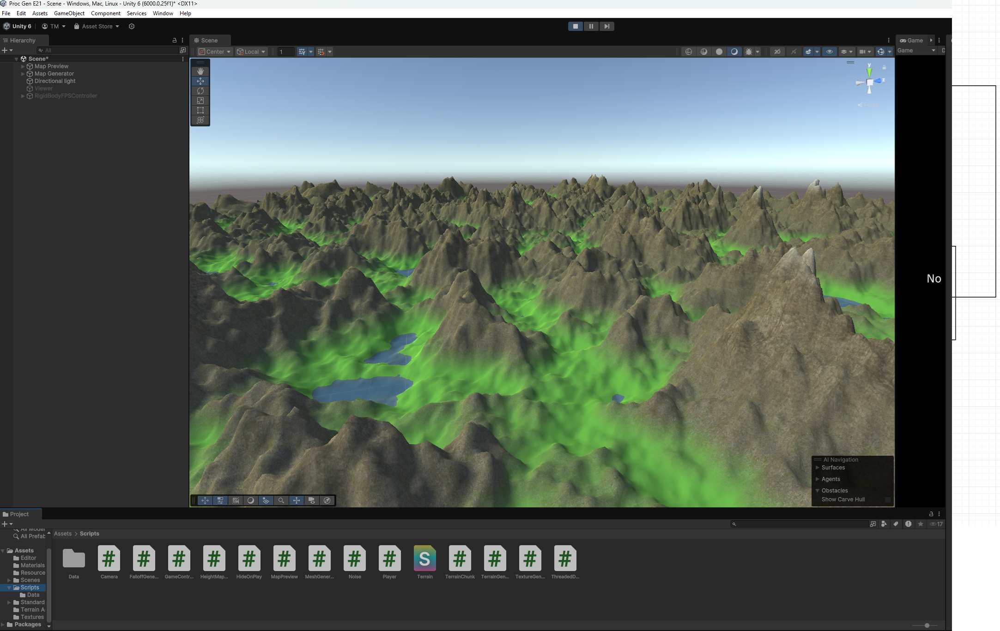
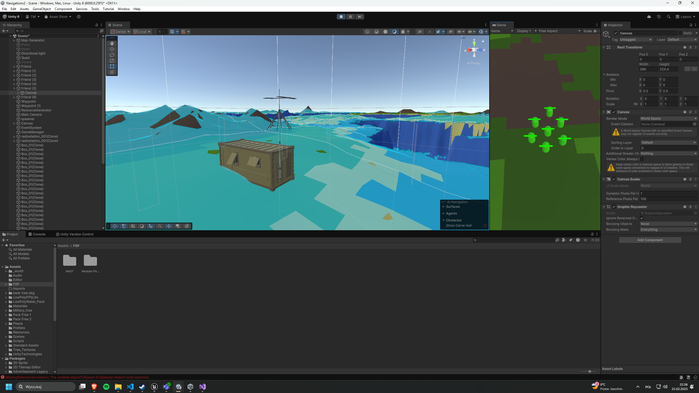
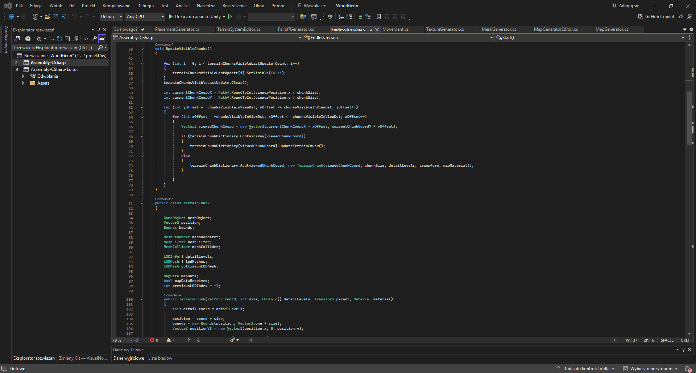
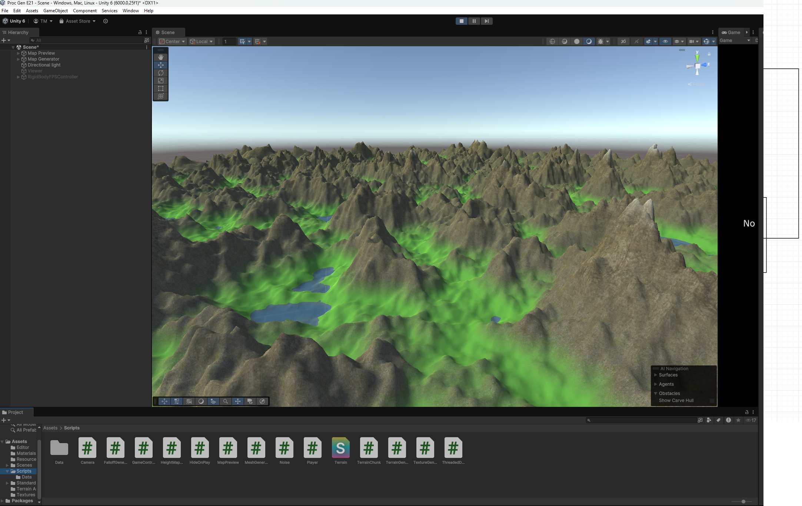

Project Description
This project is a procedural world generator built in Unity, initially based on a tutorial and later expanded into a custom island generation system. The terrain is generated using Perlin Noise-based heightmaps, with topographical coloring to visually differentiate elevation levels. To optimize performance, the project includes a Level of Detail (LOD) system and a chunk-based NavMesh generation system. The navigation mesh dynamically adapts based on chunk LOD levels, using appropriate markers to optimize AI pathfinding and reduce unnecessary calculations. Additional gameplay elements were implemented, including basic AI with team-based enemy behavior, as well as enemy spawners (radio stations) that act as objectives for the player to destroy. These spawners are placed randomly on the generated map.
Gallery

 




